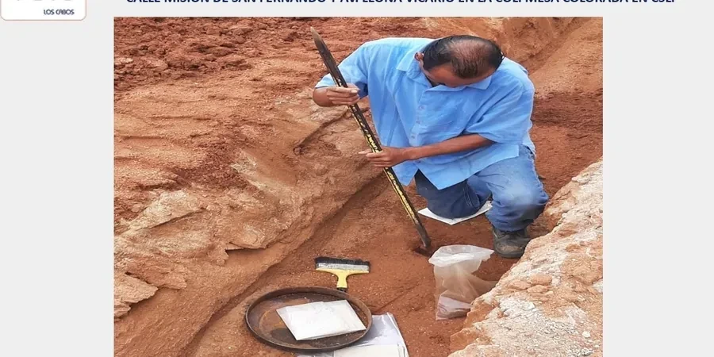

Notre bureau de Lyon propose des prestations géotechniques complètes pour les projets d'aménagement du territoire et de construction dans la région Auvergne-Rhône-Alpes. Forts d'une expérience régionale consolidée, nous réalisons des études de sols, des diagnostics de fondations et des conseils en stabilité des terrains, en nous appuyant sur des équipements calibrés et des méthodes reconnues. Nous accompagnons les maîtres d'ouvrage et les bureaux d'études dans la gestion des risques géologiques, avec une attention particulière portée aux sols argileux et aux nappes phréatiques. Pour évaluer la structure du sous-sol, nous utilisons des techniques avancées comme la tomographie sismique, et nous vérifions la portance des sols par des essais de laboratoire, notamment le CBR en laboratoire.

Méthodologie et portée
Considérations locales
Notre équipe lyonnaise combine une connaissance approfondie des formations géologiques régionales avec une maîtrise des outils de modélisation et des essais in situ. Nous disposons d'un laboratoire d'essais calibré pour les sols argileux et alluvionnaires, et nous produisons des rapports conformes aux normes NF P 94-500 et aux Eurocodes. Notre expérience dans la coordination avec les collectivités locales (Métropole de Lyon, DREAL) et les entreprises de terrassement nous permet d'anticiper les contraintes opérationnelles. Pour les projets de drainage ou de stabilisation, nous proposons des solutions adaptées, comme la conception de drains verticaux préfabriqués pour accélérer la consolidation des sols compressibles.
Normes applicables
En France, les études géotechniques suivent les normes de la série NF P 94 (essais en place et en laboratoire) et les Eurocodes structuraux, notamment l'EN 1997-1 et 2 pour les fondations et les ouvrages géotechniques. Les essais de pénétration standard (SPT) sont réalisés selon la norme NF P 94-117-1, et les essais pressiométriques selon la norme NF P 94-110. Pour les sols traités, la norme NF P 94-100 encadre les essais de résistance. Les rapports géotechniques sont établis conformément à la mission G1 à G4 définie par la norme NF P 94-500, assurant une traçabilité et une conformité réglementaire complète.
Vidéo explicative
Doutes fréquents
Quels sont les risques géologiques spécifiques à la région lyonnaise ?
Les principaux risques incluent les tassements différentiels sur les sols compressibles (tourbes, limons) dans la plaine de l'Est lyonnais, ainsi que les glissements de terrain sur les versants argileux des collines de Fourvière et de la Croix-Rousse. La nappe phréatique du Rhône peut provoquer des remontées d'eau et des instabilités lors des crues. Une étude géotechnique préalable permet d'identifier ces aléas et de dimensionner les fondations en conséquence.
Comment se déroule une étude de sol pour une construction à Lyon ?
L'étude débute par une phase de reconnaissance géologique et géotechnique, comprenant des sondages carottés, des essais pressiométriques et des analyses en laboratoire. Nous déterminons la nature des sols (alluvions, argiles morainiques, marnes) et leur comportement mécanique.
Quelles sont les obligations réglementaires pour un projet de construction en France ?
Tout projet de construction doit respecter les Eurocodes, notamment l'EN 1997 pour les fondations et l'EN 1998 pour la résistance sismique. La norme NF P 94-500 impose une mission géotechnique adaptée (G1 à G4) selon la complexité du projet. Pour les zones sismiques comme Lyon (zone 2), une étude de sol est obligatoire pour les bâtiments de catégorie III et IV. Les rapports doivent être signés par un géotechnicien qualifié.
Quels types de fondations sont couramment utilisés pour les projets lyonnais ?
Pour les sols alluvionnaires compacts (sables et graviers), les fondations superficielles (semelles filantes ou isolées) sont fréquentes. Sur les sols argileux ou compressibles, on privilégie des fondations profondes (pieux forés ou battus) ou un renforcement du sol par inclusions rigides. Dans les zones de remblais ou de tourbes, des techniques de préchargement ou de drains verticaux sont employées pour accélérer la consolidation.